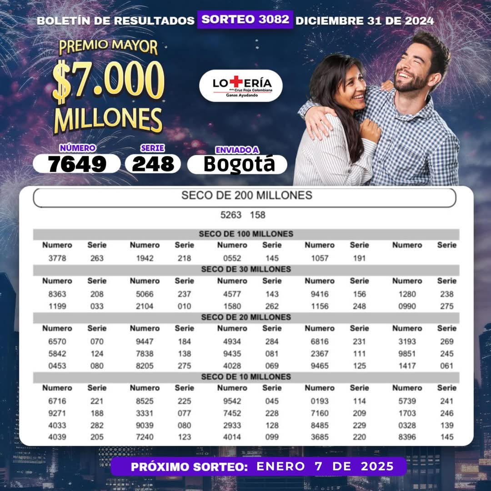

Loteria Cruz Roja: Resultados
La Lotería de la Cruz Roja, es uno de los juegos tradicionales de Colombia, cuyo origen se remonta al año 1981, cuando se estableció como una iniciativa para recaudar fondos destinados a apoyar las labores humanitarias de la Cruz Roja Colombiana. Desde su creación, la Lotería de la Cruz Roja se ha convertido en un símbolo de solidaridad y compromiso social en el territorio colombiano. Los recursos generados por la lotería se destinan a apoyar proyectos de atención médica, asistencia humanitaria, promoción de la salud y formación en primeros auxilios, entre otros programas de la Cruz Roja de Colombia. La Lotería de la Cruz Roja, la suerte de ayudar y ganar, se juega todos los martes a las 22:50 horas de Colombia (03:50+ GMT), a excepción de los días festivos, que se aplaza el sorteo para el siguiente día hábil, a la misma hora.

Últimos Sorteos
- Martes 31 de diciembre de 2024 7649 Serie 248
- Martes 24 de diciembre de 2024 5930 Serie 199
- Martes 17 de diciembre de 2024 1109 Serie 229
- Martes 10 de diciembre de 2024 9906 Serie 058
- Martes 3 de diciembre de 2024 4517 Serie 277
- Martes 26 de noviembre de 2024 0528 Serie 048
- Martes 19 de noviembre de 2024 6123 Serie 139
El premio mayor de la Lotería de la Cruz Roja es de $5.000 millones de pesos colombianos.